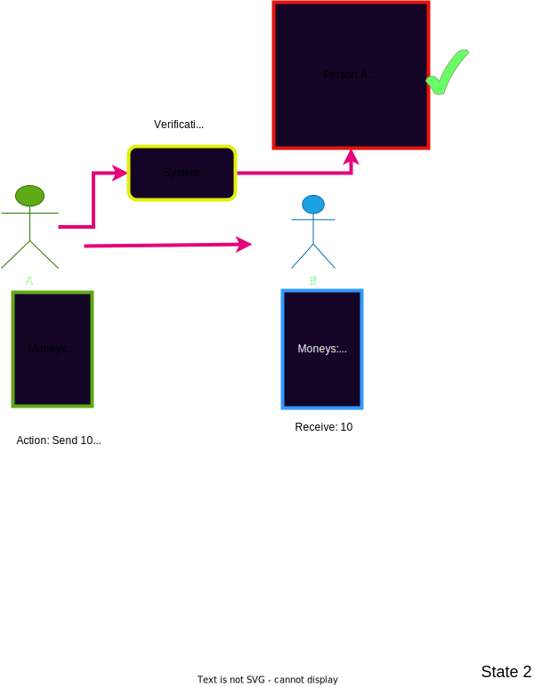
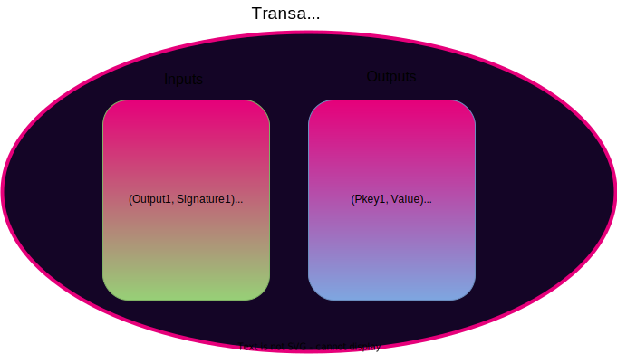
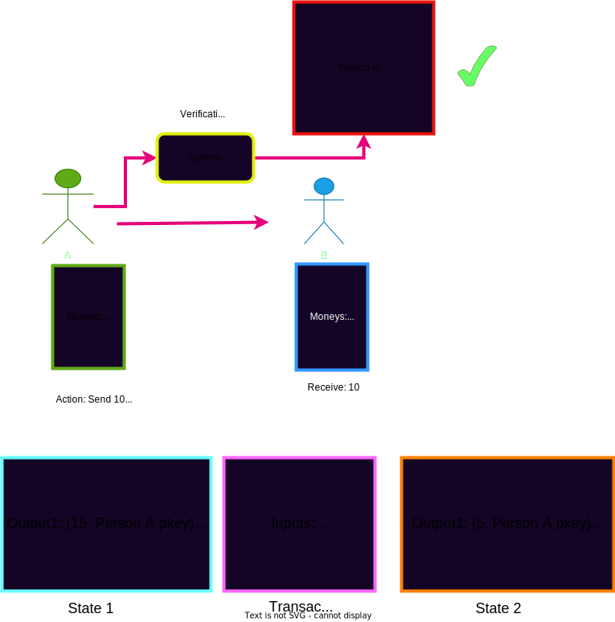
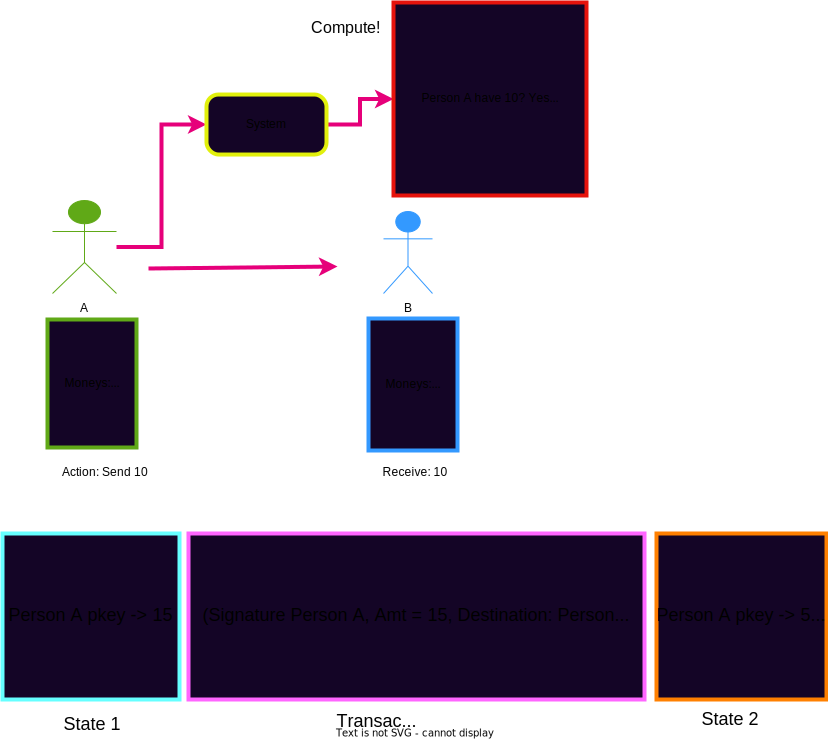

<!DOCTYPE html>
<html lang="en">

<head>
  <meta charset="utf-8" />
  <meta name="viewport" content="width=device-width, initial-scale=1.0, maximum-scale=1.0, user-scalable=no" />

  <title>Accounting Models & User Abstractions in Blockchains</title>
  <link rel="shortcut icon" href="./../../assets/favicon.ico" />
  <link rel="stylesheet" href="./../../dist/reset.css" />
  <link rel="stylesheet" href="./../../dist/reveal.css" />
  <link rel="stylesheet" href="./../../assets/styles/PBA-theme.css" id="theme" />
  <link rel="stylesheet" href="./../../css/highlight/shades-of-purple.css" />

  <link rel="stylesheet" href="./../.././assets/styles/custom-classes.css" />

</head>

<body class="site">
  <header class="site-header">
    <!-- This logo is a link only on the watching server, not the production build -->
      
  </header>
  <main class="reveal">
    <article class="slides">
      <section  data-markdown><script type="text/template">

# Accounting Models & User Abstractions in Blockchains
</script></section><section  data-markdown><script type="text/template">
## Review what we have spoken about so far

- Cryptography (Signatures, Hash functions, Hash based Data Structures)
- Economics/Game Theory
- Blockchain structure (The overall blockchain primitive, a hash list)
</script></section><section  data-markdown><script type="text/template">
## Where do we go from here?

- We have some base elements ideas and concepts
- now lets put them together into something cool..


<aside class="notes"><p>TODO: Help format images to look better</p>
</aside></script></section><section  data-markdown><script type="text/template">
## What are we talking about?

<pba-cols>
<pba-col style="font-size:smaller">

- Now that we have this structured decentralized tamper proof state machine..
- Let's think of ways we can formulate a state and a state transition in terms of representing users

</pba-col>


<aside class="notes"><p>TODO: Help format image to look better on slide</p>
</aside></script></section><section  data-markdown><script type="text/template">
## Two different paradigms

1. We craft a model in which the system acts as a global and trustless verifier

<aside class="notes"><p>TODO: Insert picture here which shows some money being sent from person A to person B and the System box is verifying whether the money I am attempting to spend is mine and the result that I am specifying to happen is valid</p>
</aside></script></section><section  data-markdown><script type="text/template">
## Example


</script></section><section  data-markdown><script type="text/template">
## Paradigm A How would we do this?

1.  You have some uniquely identifiable piece of data with a signature attached(A hash which signifies some id of a spendable thing + a signature saying I can spend that thing) In other words we have some data that can be altered only by a specific entity so we want to provide proof we can alter it.
1.  You have data which can be altered along with a key stating who can alter it.(Value + Pubkey)<br/>
    $~~~~$Thing 1 we can refer to as an input<br/>
    $~~~~$Thing 2 we can refer to as an output
</script></section><section  data-markdown><script type="text/template">
## Is this our State?<br/>What is our state?

- A bunch of "outputs" (Some value or data which can be altered via a particular specified owner)

<aside class="notes"><p>TODO: Insert picture showing a table of hash values mapping to these &quot;outputs&quot;(Data + owner)</p>
</aside></script></section><section  data-markdown><script type="text/template">
## Visual What are we talking about here?

| Key           | Value                                    |
| ------------- | ---------------------------------------- |
| Hash(tx0)     | (Pubkey5, Value = 100)                   |
| Hash(tx1)     | (Pubkey2, Value = 42)                    |
| Hash(tx2)     | (Pubkey1, Value = 33)                    |
| **Hash(tx3)** | **(Pubkey3, Value = 20)**                |
| **Hash(tx3)** | **(Pubkey1, Value = 74)**                |
| Hash(tx4)     | (Pubkey42, Value = 200000)               |
| Hash(tx5)     | (Pubkey39, Value = some big a&\* number) |
| Hash(tx6)     | (Pubkey780, Value = 80)                  |
</script></section><section  data-markdown><script type="text/template">
## So what is the notion of a User?

- A public key and all of the uniquely identifiable data which can be manipulated by that public key
</script></section><section  data-markdown><script type="text/template">
### We described somewhat of the `State` Now lets talk about how to transition the State using this new verification model.

<aside class="notes"><p>TODO: Show some image of something transitioning</p>
</aside></script></section><section  data-markdown><script type="text/template">
### A "Transaction"

- Dont be confused it is essentially a request to change the state of the system.
- What does a Transaction look like? How do inputs map to outputs?
- A list of inputs + a list of outputs
</script></section><section  data-markdown><script type="text/template">
### What were those<br/>input-output thingies again?



<aside class="notes"><p>TODO: Show picture of inputs and outputs in a transaction similar to UTXO frameless explain how new outputs are derived from previously specified outputs from the input</p>
</aside></script></section><section  data-markdown><script type="text/template">
### So what happens in a state transition<br/>or verification in this model?

- Inputs signal which outputs from the state will be consumed
- We must verify the signature given in the input with the corresponding specified outputs pubkey or owner
- We must verify that the resulting state which has been provided is a valid one(We define what this is)
- In the case of money or just a raw value we can assume that you cannot take some piece of moneys worth 10 and create a list of new outputs which have more than 10 moneys
</script></section><section  data-markdown><script type="text/template">
## Transition


</script></section><section  data-markdown><script type="text/template">
## Unspent Transaction Outputs(UTXOS) solved...

<pba-cols>
<pba-col>

- Now whenever someone mentions UTXO's and the UTXO model you can now fundamentally know what actually is being referenced..(Hopefully!)

</pba-col>


<aside class="notes"><p>TODO: Add some picture of a person cheering and happy</p>
</aside></script></section><section  data-markdown><script type="text/template">
## Paradigm B..

- B.) We craft a model in which the system acts as a computer and by submitting some input it will determine the result from my input.

<aside class="notes"><p>TODO make some notes</p>
</aside></script></section><section  data-markdown><script type="text/template">
## Well lets make things more intuitive!

- So instead of doing the computation ourselves and then submitting it to the system to verify...(i.e. understanding the present state and then computing the resulting state)
- Why dont we just let the system hold our state information or data in the form of an "Account" and we submit requests and data to the system.
- This means we can let the system be our computer for us!
</script></section><section  data-markdown><script type="text/template">
## Well well what is state<br/>then in this system?

- Accounts -> Values

<aside class="notes"><p>TODO: Show picture of a table mapping a pubkey to a value or data item(in its simplest form a value)</p>
</aside></script></section><section  data-markdown><script type="text/template">
## Accounts State Table

| Key   | Value       |
| ----- | ----------- |
| 0xa32 | 5           |
| 0x002 | 53          |
| 0xaf5 | 68          |
| 0x805 | 42          |
| 0xbc3 | 30000000000 |
| 0x429 | 4           |
| 0x8c7 | 1           |
| 0x30a | 3823        |
</script></section><section  data-markdown><script type="text/template">
## Now that state is<br/>much easier to comprehend!!

> What about transitioning my state or account?
</script></section><section  data-markdown><script type="text/template">
## State transitions a "Transaction"

> What does a transaction look like now?

<aside class="notes"><p>TODO: Insert some picture here which shows some money being sent from person A to person B but instead person A just signs a message saying to send to person B and the system determines what the updated output result or state will be</p>
</aside></script></section><section  data-markdown><script type="text/template">
## Transaction + Transition


</script></section><section  data-markdown><script type="text/template">
## So what happens in a State transition<br/>in this computation model?

- We still verify but we verify less and determine more!
- Check the signature of the message or computational instruction given
- Verify that the account that is being requested to be modified is the signers account
- Perform the computation necessary given by the instruction and update the account accordingly!
</script></section><section  data-markdown><script type="text/template">
## Accounts vs UTXO model

**Oh the fun begins..**
</script></section><section  data-markdown><script type="text/template">
## Size(Storage)

### Accounts wins this one...

> Question:<br/>UTXOS are much heavier in terms of raw data stored + transaction size can anyone think of why...?
</script></section><section  data-markdown><script type="text/template">
## Answer..

- In Accounts model just a single balance or data value is stored.
- In UTXO model each data item has a specific unique ID assosciated with it and as such data items are unique/non-fungible as represented in the system.
- In UTXO model as more items are consumed more are being produced and storage size can grow much more quickly
- Transactions are generally more simple in the Accounts model because no output state must be specified.(Sender, Receiver, value to change)
</script></section><section  data-markdown><script type="text/template">
## Privacy

- Both have their merits in different ways regarding privacy can anyone think of an advantage to one over the other in this regard and why?
</script></section><section  data-markdown><script type="text/template">
## Answer..

- Accounts model in its default state utilizes the efficiency of address reuse but this makes transaction history easy to aggregate.
- UTXO model can utilize a change address such that the resulting Output is assigned to a completely new user whom is unknown to the system
- If no change addresses are used in the UTXO model there is perfect linking between transactions providing a very obvious chain of events
- Accounts model when using mixing allows for obfuscation due to fungability. There is no differentiator between values of a single account.
</script></section><section  data-markdown><script type="text/template">
## Smart contracts of<br/>general compute platforms

- Based on all previous information can we think of which model is more intuitive and seems to make more sense..?
</script></section><section  data-markdown><script type="text/template">
## Answer..

- Verification is easier if all that is needed is to check a value assosciated with a pubkey rather than verifying if an Output has been consumed
- No necessity on defining output state that is the point of the computer to determine it for you!
- Smart contract UTXO would need to select which outputs to use when trasacting as well as how to handle state outputs causing huge overhead and bloat
- A specific contract(or program) which a specific ID is easy to track and to transact with other programs by simple checks of values
</script></section><section  data-markdown><script type="text/template">
## Parallelization

> Which model seems easier to paraellelize and why??
</script></section><section  data-markdown><script type="text/template">
## Answer..

- Multiple transactions which touch a single Account generally should be executed in sequence.
- Seperate UTXOs have no relation making them easy to execute on seperately given there is no race conditions..
</script></section><section  data-markdown><script type="text/template">
## Conclusion..

**Both are good depending on the usecase!!**
</script></section><section  data-markdown><script type="text/template">
## At the end of the day<br/>it is just a state machine


<aside class="notes"><p>TODO: Insert some fun picture and hint at how to agree on all of these now understood (Transactions) to come...</p>
</aside></script></section>
    </article>
  </main>

  <script src="./../../dist/reveal.js"></script>

  <script src="./../../plugin/markdown/markdown.js"></script>
  <script src="./../../plugin/highlight/highlight.js"></script>
  <script src="./../../plugin/zoom/zoom.js"></script>
  <script src="./../../plugin/notes/notes.js"></script>
  <script src="./../../plugin/math/math.js"></script>
  <script>
    function extend() {
      var target = {};
      for (var i = 0; i < arguments.length; i++) {
        var source = arguments[i];
        for (var key in source) {
          if (source.hasOwnProperty(key)) {
            target[key] = source[key];
          }
        }
      }
      return target;
    }

    // default options to init reveal.js
    var defaultOptions = {
      controls: true,
      progress: true,
      history: true,
      center: true,
      transition: 'default', // none/fade/slide/convex/concave/zoom
      slideNumber: true,
      plugins: [
        RevealMarkdown,
        RevealHighlight,
        RevealZoom,
        RevealNotes,
        RevealMath
      ]
    };

    // options from URL query string
    var queryOptions = Reveal().getQueryHash() || {};

    var options = extend(defaultOptions, {"width":1400,"height":900,"margin":0,"minScale":0.2,"maxScale":2,"transition":"none","controls":true,"progress":true,"center":true,"slideNumber":true,"backgroundTransition":"fade"}, queryOptions);
  </script>


  <script>
    Reveal.initialize(options);
  </script>
</body>

</html>
